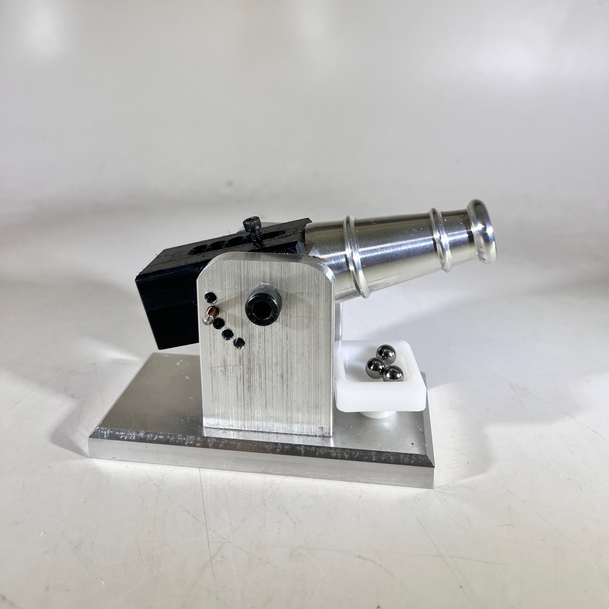
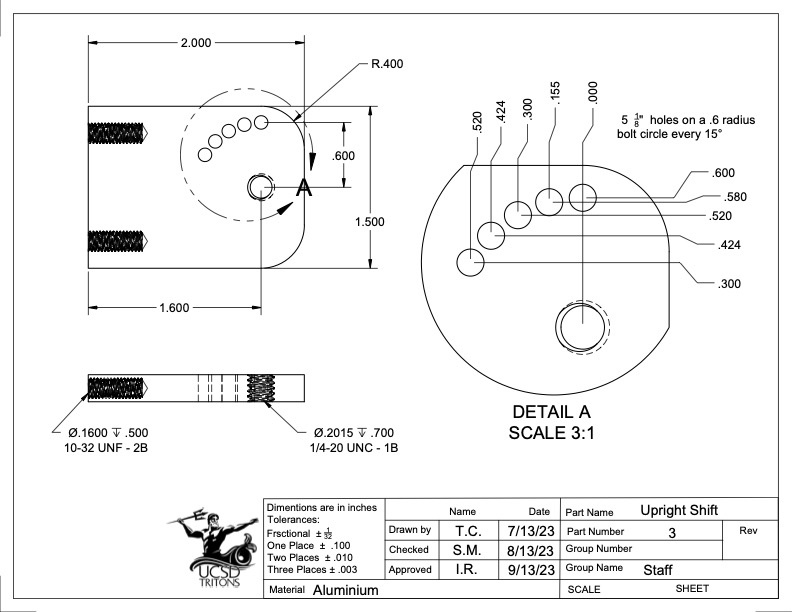
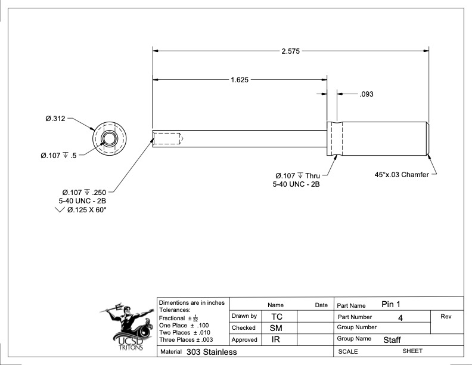
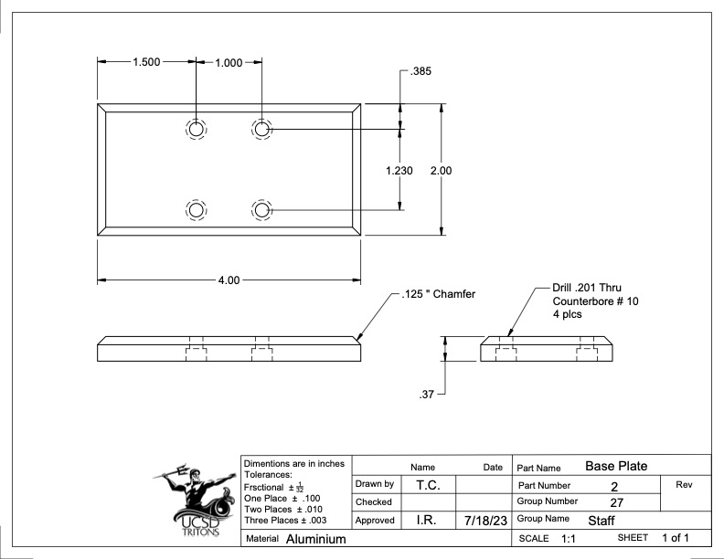
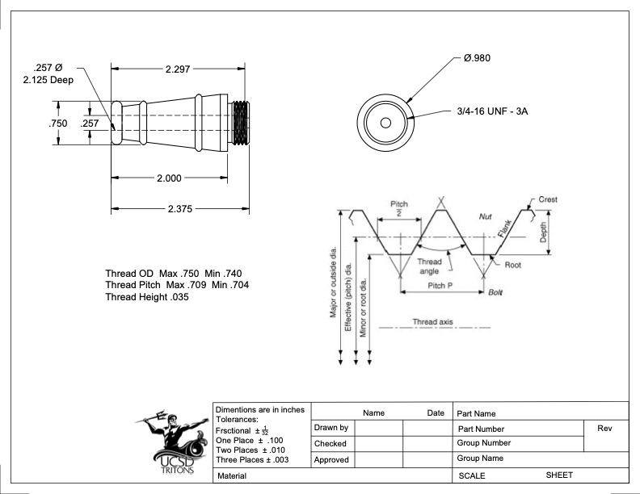

Mentorship, Consultation & Machine Maintenance
My journey into engineering mentorship began from the perspective of a student taking this very course. Designing and machining a projectile cannon served as my introduction to rigorous mechanical design, requiring tight-tolerance manual turning on the lathe, structural assembly, and adherence to specific performance metrics.
Successfully executing this project from raw stock to a functional prototype proved my proficiency in fundamental machining and design. Experiencing the challenges of the capstone firsthand allowed me to deeply empathize with future students, giving me the technical foundation necessary to transition from a student into a leadership role.

At the beginning of the course, I guided students through a foundational curriculum centered on building their own projectile cannons. This hands-on process was broken down into four core machining modules, ensuring they understood both manual operations and advanced CNC manufacturing:
Students learned the fundamentals of manual milling by squaring raw stock, edge-finding, and drilling to manufacture the cannon's base plate and structural upright. This instilled a deep understanding of workholding and coordinate systems.
I taught the basics of manual turning, facing, and chamfering as students operated the manual lathe. They applied these skills to precisely turn down the connecting pin that successfully interfaces with the cannon assembly.
Transitioning to automated manufacturing, students utilized CNC mills to fabricate the complex kinback component. This challenging piece required teaching them how to safely program, setup, and execute four distinct machining setups.
To complete the curriculum, students utilized the CNC lathe to manufacture the kinfront piece. This introduced them to automated turning operations, establishing tool offsets, and reliably achieving tight tolerances through G-code.
Complete technical documentation for the course curriculum, demonstrating proficiency in engineering drawing standards.




Once students mastered the basics, they began their actual capstone projects. At this stage, my responsibilities shifted from instruction to engineering consultation. I became a dedicated resource for students navigating the most critical phase of their degrees.
I acted as a technical advisor for senior design teams, reviewing their initial concepts, advising on material selection, and conducting design-for-manufacturing (DFM) reviews to ensure their ideas could be realistically fabricated within their timelines, budget, and skillset.
Teaching effectively requires a highly functional and safe environment. Beyond my direct interactions with students, I developed crucial skills in maintaining and managing an operational machine shop.